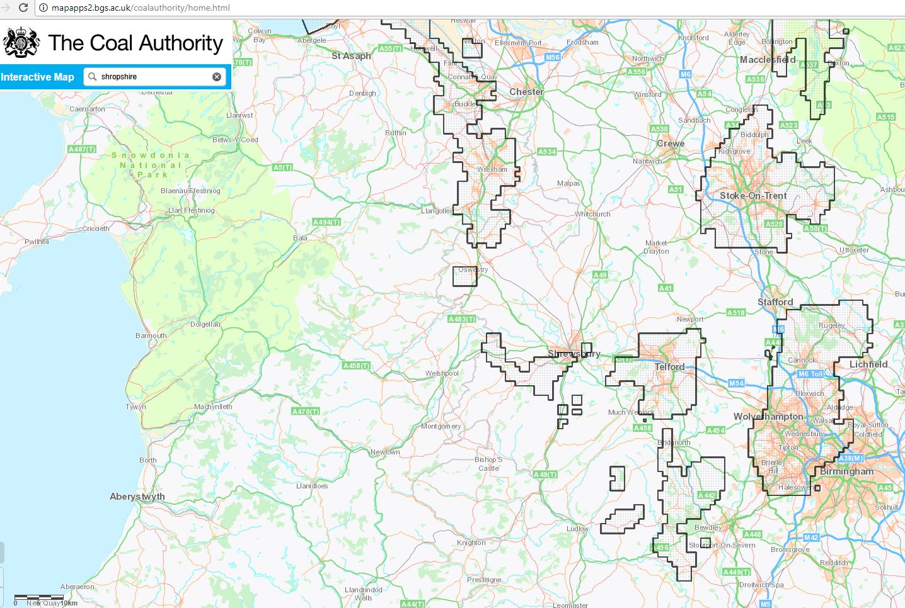

Map wanted: L.D.S. Branches (circa 1845-1850) – from “Unidentified Pioneers – Staffordshire Branches”
This Mormon site contains a history of the church in Britain – The Church in the British Isles http://www.lightplanet.com/mormons/daily/history/british/html.
This site includes The Millennial Star, the early Mormon newspaper, and links to the history associated with British Mission and Early Mormon Missionaries https://history.lds.org/missionary/mission/british?lang=eng
For Welsh immigrants, voyages, and biographies – Welsh Mormon History http://welshmormon.byu.edu/Immigrants_Listing.aspx
Thomas Dunlop Brown was a missionary who baptized Robert’s fellow passenger, Thomas Davies – Thomas Dunlop Brown https://history.lds.org/missionary/individual/thomas-d-dunlop-brown-1807?lang=eng

Maps Wanted:
Map corresponding to 1841 or 1851 British Census